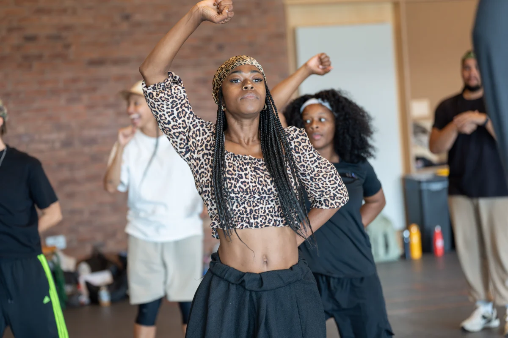

First-look rehearsal photographs have been revealed for the triumphant return of Sylvia: A Musical Revolution. The Olivier-nominated production is gearing up for a limited UK tour this Autumn, culminating in a landmark five-performance run at the iconic Royal Albert Hall from 13th to 15th November 2026.
We are massive champions of powerhouse theatre here at Behind the Magic Curtain, and seeing the phenomenal Beverley Knight MBE step back into her Olivier Award-winning role as Emmeline Pankhurst alongside Naomi Katiyo as Sylvia Pankhurst is nothing short of thrilling. Created by ZooNation's visionary Kate Prince alongside writers Priya Parmar, Josh Cohen, and DJ Walde, this production fuses electrifying hip-hop, funk, and soul to bring the untold story of the rebellious middle child of the Pankhurst family vibrantly to life.
This autumn's run carries incredible historical resonance. The Royal Albert Hall served as the backdrop for nearly thirty suffragette events between 1908 and 1913, affectionately known to the movement as a 'Temple of Liberty' before the Suffragettes were famously barred in April 1913. Returning to the venue feels like the ultimate circle-of-life celebration. Even better for family audiences and young theatregoers, the production will host the UK's largest-ever education matinee on Friday 13th November in partnership with Go Live Theatre and The Garek Trust, welcoming nearly 5,000 children and young people with tickets priced at just £10 to ensure live theatre remains accessible to all.
Photo Gallery
- Curve Leicester (24 Sep – 3 Oct)
- Birmingham Hippodrome (6 – 10 Oct)
- Edinburgh Festival Theatre (13 – 17 Oct)
- Salford Lowry (19 – 24 Oct)
- Norwich Theatre (27 – 31 Oct)
- Canterbury Marlowe (2 – 7 Nov)
- Royal Albert Hall, London (13 – 15 Nov 2026).
- Key Cast: Beverley Knight MBE (Emmeline Pankhurst), Naomi Katiyo (Sylvia Pankhurst), Kelly Agbowu, Ellena Vincent, Kirstie Skivington, and Ivano Turco.
- Image Credits: All rehearsal photography by Johan Persson, featuring cast members including Lauren Azania, Ebony Clarke, and creative team members Kate Prince and Sean Green.
- Tickets & Info: Available at sylviamusicaluk.com